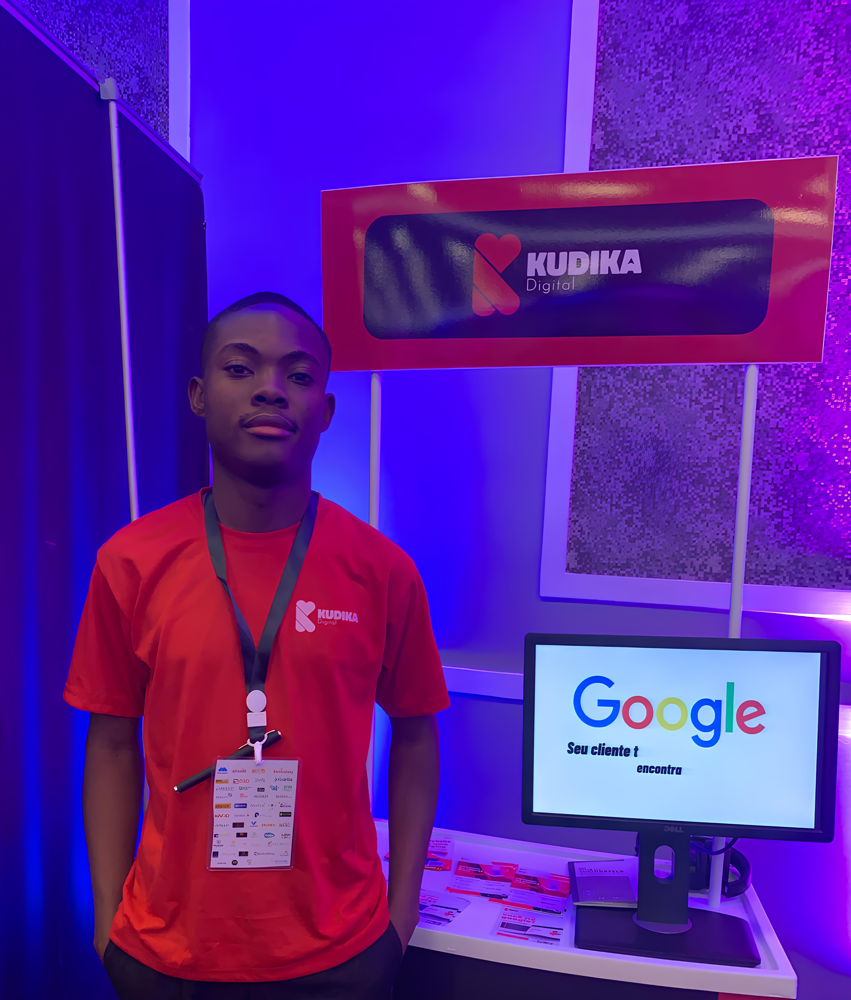

Com 23 anos, estou no 3º Ano de Licenciatura no curso de Engenharia Informática no ISPOZANGO, onde continuo a desenvolver a minha base académica na área tecnológica, com foco em sistemas, programação e aplicação prática do conhecimento.
CEO da FPV Research Hub – Fazendo Por Você, onde lidero a estruturação e coordenação de iniciativas focadas no suporte académico. A minha atuação centra-se na organização de processos, gestão de conteúdos e aplicação de metodologias que visam apoiar estudantes na produção e desenvolvimento de trabalhos académicos com rigor e clareza.
O meu percurso profissional inclui atuação na Kudika Digital, onde desempenho funções como Adjunto de Comercial e Marketing. Nesta posição, participo na gestão de processos comerciais, comunicação com clientes e apoio estratégico às atividades da empresa, contribuindo para a organização e desenvolvimento das operações no contexto digital.
Paralelamente, atuo como Docente de Educação Laboral e EVP, onde trabalho diretamente com estudantes no ensino de competências práticas e técnicas. Esta experiência tem sido fundamental para o desenvolvimento da minha comunicação, responsabilidade e capacidade de transmitir conhecimento de forma clara e estruturada.
No campo tecnológico, o desenvolvimento de software faz parte da minha experiência prática pessoal e académica, sendo explorado sobretudo através de projetos universitários e iniciativas individuais, onde aplico conceitos de programação e resolução de problemas.
Habilidades Técnicas:
